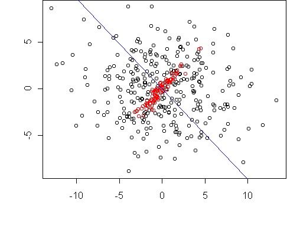
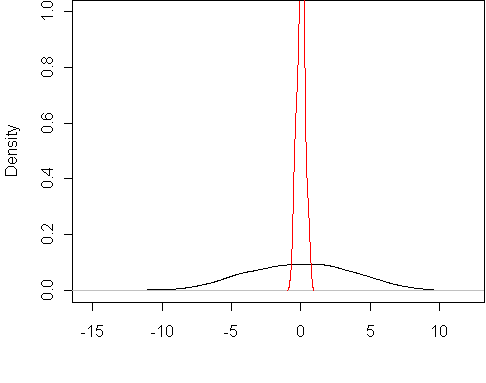
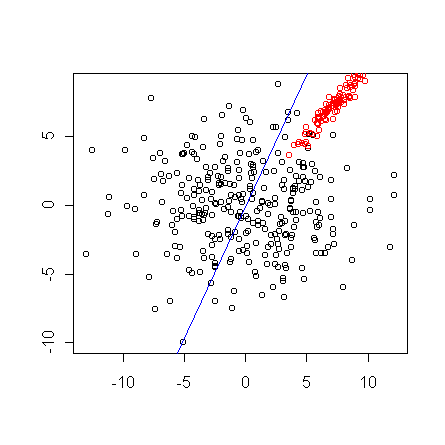
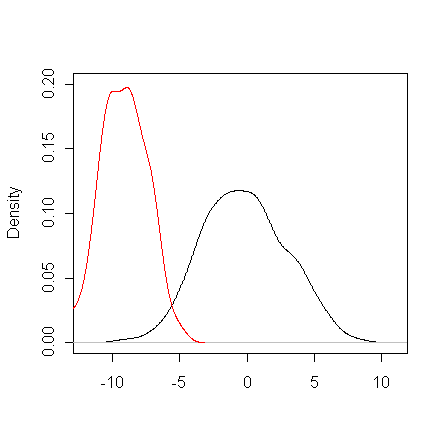

A traditional and successful approach to discriminative projection is the Fisher projection, which assumes the classes are Gaussian with the same covariance matrix. Fisher projection focuses on separating the classes based on their means. But what if the covariances are different? That is the case addressed here.
When class covariances are different, a good projection makes the projected
variances as different as possible. Consider this example:

The classes both have zero mean, so the Fisher projection is undefined.
But not all projections are equally good. The projection axis shown
allows the projected data to be classified with minimal misclassification
rate.
It also achieves the largest difference between the variances of the
projected classes.
Here are the projected class densities:

This projection was found by optimizing v1/v2, where
v1 and v2 are the projected variances.
The optimum is found by solving an eigenvector equation.
By using a more general projection criterion, we can also solve the case
where both the class means and class covariances are different.
The objective is va/(v1*v2), where va is the variance
of the combined data after projection. (If class sizes are unequal, there
are additional constants in the objective.)
This dataset is the same as above but with class 1 shifted:

The result is a compromise between the above projection and the Fisher
projection. Here are the projected class densities, designed to have
minimal overlap both in mean and variance:

The projection in this case is found by EM algorithm which solves a series
of eigenvector equations until a fixed points is reached (typically in four
steps).